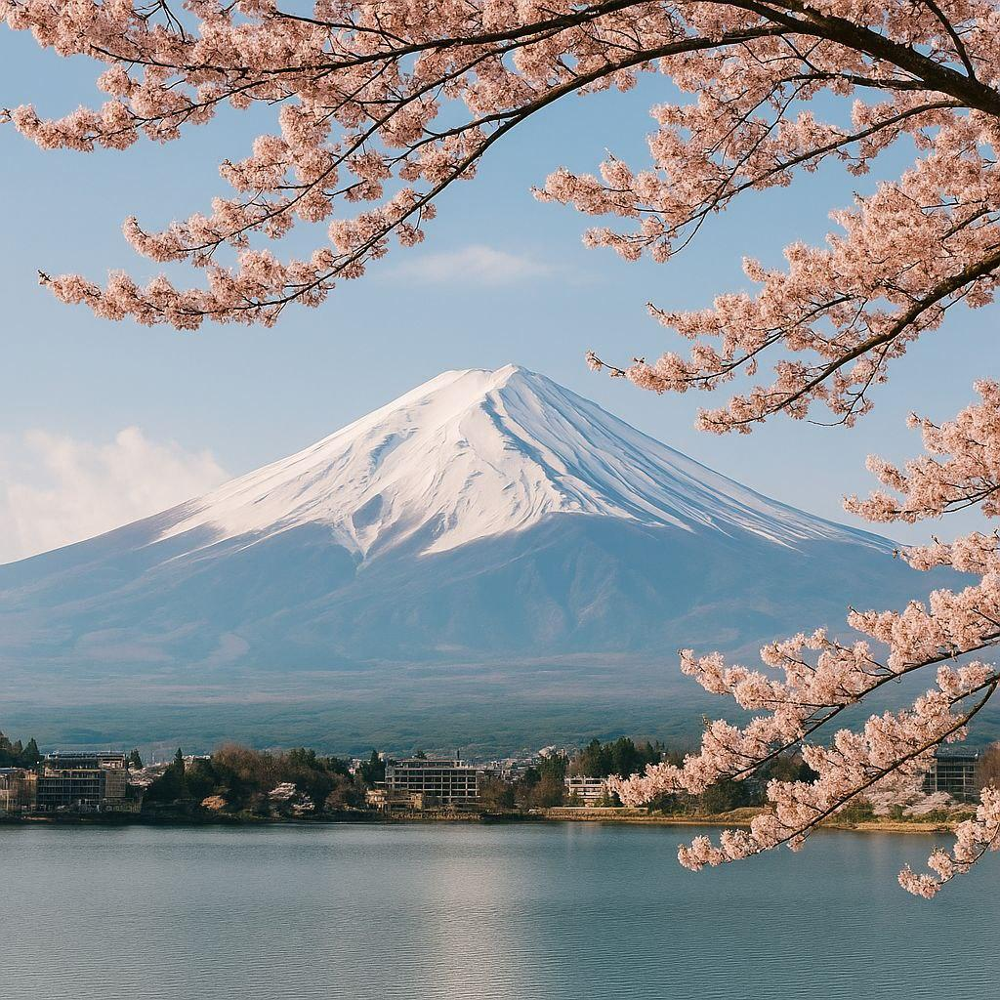

5 Outfits to Explore Japan in Style
Summary: Japan is where tradition meets futuristic fashion. From serene shrines in Kyoto to the buzzing streets of Tokyo, here are five looks that blend cultural respect with personal expression.
Stepping into Japan is like walking through a style spectrum. One moment you’re admiring a minimal kimono in a quiet temple garden, the next you’re passing a teen in Harajuku dressed like an anime superhero. So how do you dress for a country with fashion DNA this eclectic? Here's your answer.
1. The Kyoto Zen
Opt for soft tones: a beige wide-leg pant, a white linen top, and simple leather sandals. Carry a canvas tote and tuck your hair with a wooden pin. Bonus points if your look whispers “calm tea ceremony.”
2. The Harajuku Pop
Time to go bold. Layer a colorful pleated skirt with graphic socks and a bright oversized tee. Add chunky sneakers, a small crossbody, and funky accessories. The more playful, the better!
3. The Tokyo Techwear
Think functionality with edge. Black cargo pants, a fitted tech-jacket, high-top sneakers, and a mask (yes, still trendy). Add silver rings or a monochrome cap. It’s sleek, smart and city-ready.
4. The Osaka Vintage
Mix denim with floral shirts and loafers. Vintage shops rule here. Tuck in your shirt, cuff your pants, and carry a camera like you're scouting photo spots—because you are.
5. The Shrine Smart
When visiting sacred spaces, go respectful. A midi dress or ankle-length skirt, neutral tones, and comfortable shoes. Bring a light cardigan or shawl to cover up if needed.
Style Tip: Always remove your shoes indoors and avoid flashy outfits in spiritual places. In Tokyo? Go wild. In Nara? Stay classic.
Final thought: Japanese fashion is fearless yet respectful. So wear your boldest outfit with the softest heart—and let the country inspire your next style evolution.